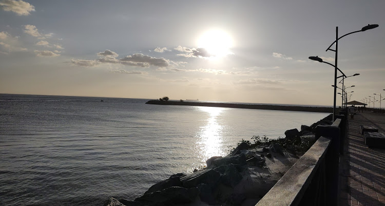
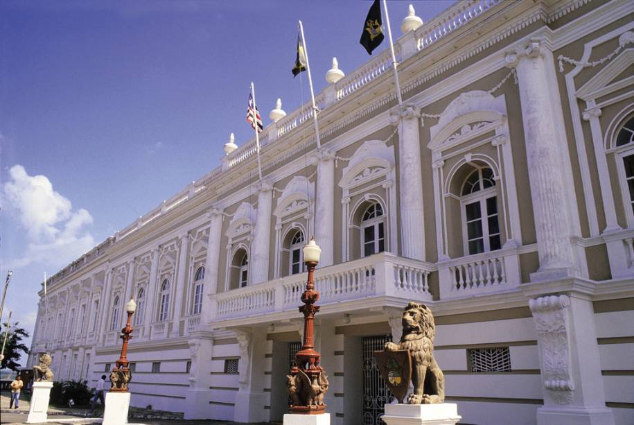
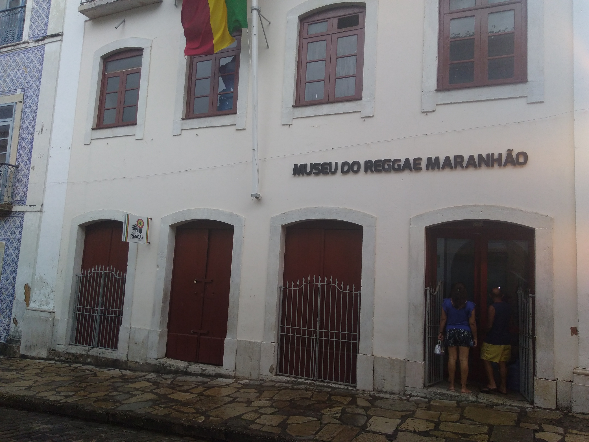
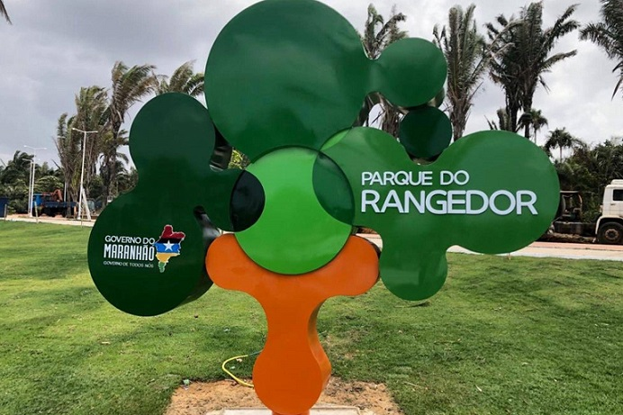

Ponta do Espigão da Ponta d'Areia
O Espigão Costeiro da Ponta d'Areia é uma estrutura costeira que tem por finalidade principal proteger a costa da ação das ondas do mar, localizado em São Luís. O espigão possui 572 metros de extensão, O Espigão funciona como uma espécie de muro de contenção, desviando o fluxo da maré e permitindo que a areia seja retida na costa, impossibilitando a erosão e aumentando a faixa de praia. Foi construído para resolver o problema de erosão na orla da praia da Ponta d'Areia, o que poderia comprometer a orla da capital até o limite do rio Bacanga. Além de ser um local onde as pessoas visitam para ver o por do sol, apenas caminhar ou lanchar em algumas das diversas baraquinhas de comidas localizadas lá.
Palácio dos Leões
Palácio dos Leões é o edifício-sede do governo do estado brasileiro do Maranhão. Localiza-se no centro histórico da cidade de São Luís, na área designada Patrimônio Mundial pela UNESCO. Com uma história que começa no início do século XVII, o Palácio dos Leões um dos maiores símbolos da cultura maranhense. Desde o início de sua primeira construção em 1626 como residência de governante, e após sofrer sucessivas adjunções e modificações, o edifício tornou -se descaracterizado e deteriorado ao longo dos anos, o que ocasionou a interdição da ala residencial. Após o projeto de recuperação e restauração, concluído em 2003, o prédio passou a ter as características atuais. A sua localização privilegiada, no alto do promontório onde nasceu a cidade de São Luís, aliada à sua trajetória histórica, à sua arquitetura e seus bens artísticos, fazem do Palácio um conjunto de fundamental importância para o entendimento da formação da identidade cultural do povo maranhense.
Museu do Reggae Maranhão
Foi fundado em 18 de janeiro de 2018. O museu tem como objetivo materializar as memórias do ritmo jamaicano que conquistou o Maranhão.São Luís é considerada também a capital do reggae no Brasil, o que valeu o apelido de Jamaica brasileira.
Parque Estadual do Sítio do Rangedo
O Parque Estadual do Sítio do Rangedor é uma unidade de conservação brasileira localizada na cidade de São Luís, no Maranhão. Com 120 hectares de área, o parque é uma unidade de proteção integral de reposição de aquíferos. Sua existência, no meio da cidade, garante o abastecimento de importantes lençóis freáticos, localizados no subsolo.
Praia do Mangue Seco e Praia de Juçatuba
Wang Park e Valparaíso Acqua Park